Kubernetes 网络
Pod 网络
Pod 的多个容器是共享网络 Namespace 的，这意味着：
-
同一个 Pod 中的不同容器可以彼此通过 Loopback 地址访问：
- 在第一个容器中起了一个服务 http://127.0.0.1
- 在第二个容器内，是可以通过 httpGet http://127.0.0.1 访问到该地址的。
-
这种方法常用于不同容器间的互相协作。
什么是CNI
Kubernetes定义的这个网络模型很完美，但要把这个模型落地实现就不那么容易了。所以Kubernetes就专门制定了一个标准： CNI（Container Networking Interface）。
CNI为网络插件定义了一系列通用接口，开发者只要遵循这个规范就可以接入Kubernetes，为Pod创建虚拟网卡、分配IP地址、设置路由规则，最后就能够实现“IP-per-pod”网络模型。
依据实现技术的不同，CNI插件可以大致上分成“ **Overlay**”“ **Route**”和“ **Underlay**”三种。
Overlay 的原意是“覆盖”，是指它构建了一个工作在真实底层网络之上的“逻辑网络”，把原始的Pod网络数据封包，再通过下层网络发送出去，到了目的地再拆包。因为这个特点，它对底层网络的要求低，适应性强，缺点就是有额外的传输成本，性能较低。
Route 也是在底层网络之上工作，但它没有封包和拆包，而是使用系统内置的路由功能来实现Pod跨主机通信。它的好处是性能高，不过对底层网络的依赖性比较强，如果底层不支持就没办法工作了。
Underlay 就是直接用底层网络来实现CNI，也就是说Pod和宿主机都在一个网络里，Pod和宿主机是平等的。它对底层的硬件和网络的依赖性是最强的，因而不够灵活，但性能最高。
自从2015年CNI发布以来，由于它的接口定义宽松，有很大的自由发挥空间，所以社区里就涌现出了非常多的网络插件，我们之前在 第17讲 里提到的Flannel就是其中之一。
Flannel（ https://github.com/flannel-io/flannel/）由CoreOS公司（已被Redhat收购）开发，最早是一种Overlay模式的网络插件，使用UDP和VXLAN技术，后来又用Host-Gateway技术支持了Route模式。Flannel简单易用，是Kubernetes里最流行的CNI插件，但它在性能方面表现不是太好，所以一般不建议在生产环境里使用。
现在还有两个常用CNI插件：Calico、Cilium，我们做个简略的介绍。
Calico（ https://github.com/projectcalico/calico）是一种Route模式的网络插件，使用BGP协议（Border Gateway Protocol）来维护路由信息，性能要比Flannel好，而且支持多种网络策略，具备数据加密、安全隔离、流量整形等功能。
Cilium（ https://github.com/cilium/cilium）是一个比较新的网络插件，同时支持Overlay模式和Route模式，它的特点是深度使用了Linux eBPF技术，在内核层次操作网络数据，所以性能很高，可以灵活实现各种功能。在2021年它加入了CNCF，成为了孵化项目，是非常有前途的CNI插件。
CNI插件是怎么工作的
Flannel比较简单，我们先以它为例看看CNI在Kubernetes里的工作方式。
这里必须要说明一点，计算机网络很复杂，有IP地址、MAC地址、网段、网卡、网桥、路由等许许多多的概念，而且数据会流经多个设备，理清楚脉络比较麻烦，今天我们会做一个大概的描述，不会讲那些太底层的细节。
我们先来在实验环境里用Deployment创建3个Nginx Pod，作为研究对象：
kubectl create deploy ngx-dep --image=nginx:alpine --replicas=3
使用命令 kubectl get pod 可以看到，有两个Pod运行在master节点上，IP地址分别是“10.10.0.3”“10.10.0.4”，另一个Pod运行在worker节点上，IP地址是“10.10.1.77”：
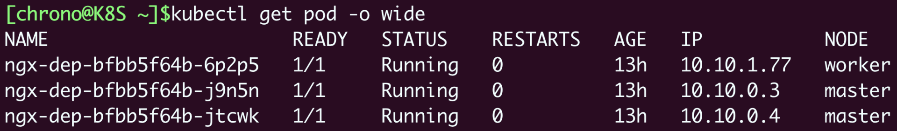
Flannel默认使用的是基于VXLAN的Overlay模式，整个集群的网络结构我画了一张示意图，你可以对比一下Docker的网络结构：
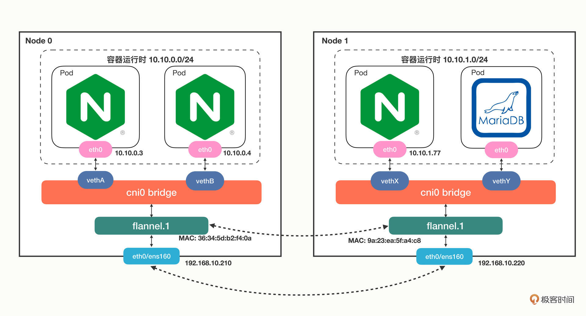
从单机的角度来看的话，Flannel的网络结构和Docker几乎是一模一样的，只不过网桥换成了“cni0”，而不是“docker0”。
接下来我们来操作一下，看看Pod里的虚拟网卡是如何接入cni0网桥的。
在Pod里执行命令 ip addr 就可以看到它里面的虚拟网卡“eth0”：
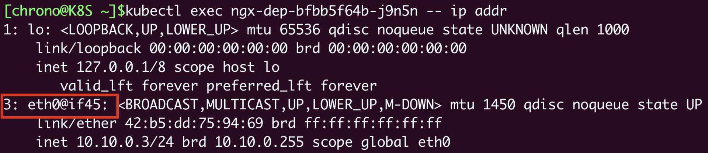
你需要注意它的形式，第一个数字“3”是序号，意思是第3号设备，“@if45”就是它另一端连接的虚拟网卡，序号是45。
因为这个Pod的宿主机是master，我们就要登录到master节点，看看这个节点上的网络情况，同样还是用命令 ip addr：
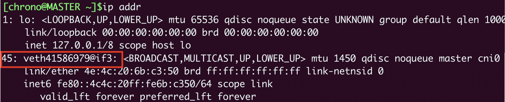
这里就可以看到宿主机（master）节点上的第45号设备了，它的名字是 veth41586979@if3，“veth”表示它是一个虚拟网卡，而后面的“@if3”就是Pod里对应的3号设备，也就是“eth0”网卡了。
那么“cni0”网桥的信息该怎么查看呢？这需要在宿主机（master）上使用命令 **brctl show**：
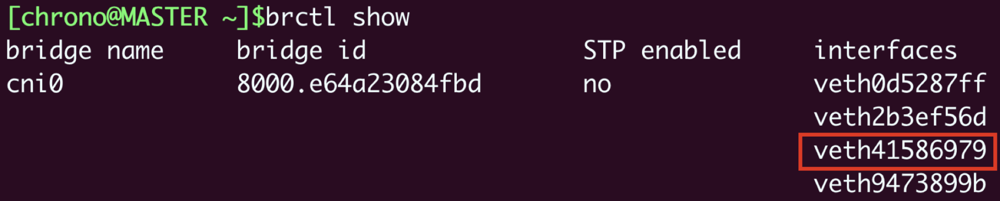
从这张截图里，你可以发现“cni0”网桥上有4个虚拟网卡，第三个就是“veth41586979”，所以这个网卡就被“插”在了“cni0”网桥上，然后因为虚拟网卡的“结对”特性，Pod也就连上了“cni0”网桥。
单纯用Linux命令不太容易看清楚网卡和网桥的联系，所以我把它们整合在了下面的图里，加上了虚线标记，这样你就能更清晰地理解Pod、veth和cni0的引用关系了：
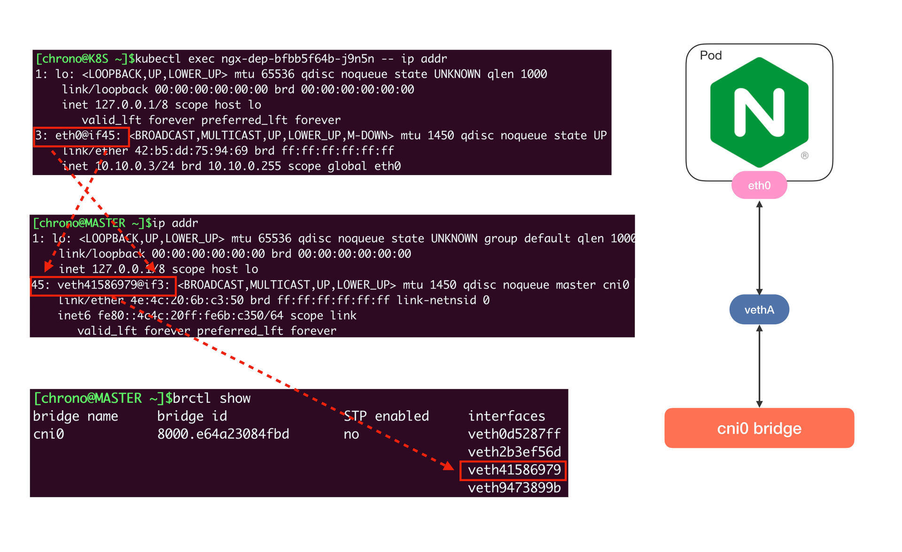
使用同样的方式，你可以知道另一个Pod “10.10.0.4”的网卡是 veth2b3ef56d@if3，它也在“cni0”网桥上，所以借助这个网桥，本机的Pod就可以直接通信。
弄清楚了本机网络，我们再来看跨主机的网络，它的关键是节点的路由表，用命令 route 查看：
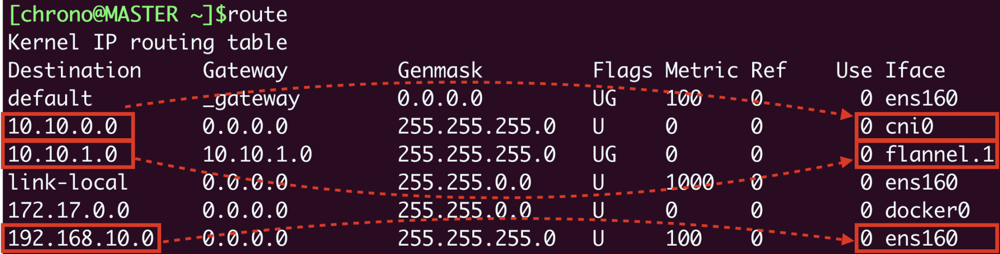
它告诉我们有这些信息：
- 10.10.0.0/24网段的数据，都要走cni0设备，也就是“cni0”网桥。
- 10.10.1.0/24网段的数据，都要走flannel.1设备，也就是Flannel。
- 192.168.10.0/24网段的数据，都要走ens160设备，也就是我们宿主机的网卡。
假设我们要从master节点的“10.10.0.3”访问worker节点的“10.10.1.77”，因为master节点的“cni0”网桥管理的只是“10.10.0.0/24”这个网段，所以按照路由表，凡是“10.10.1.0/24”都要让flannel.1来处理，这样就进入了Flannel插件的工作流程。
然后Flannel就要来决定应该如何把数据发到另一个节点，在各种表里去查询。因为这个过程比较枯燥，我就不详细说了，你可以参考下面的示意图，用到的命令有 ip neighbor、 bridge fdb 等等：
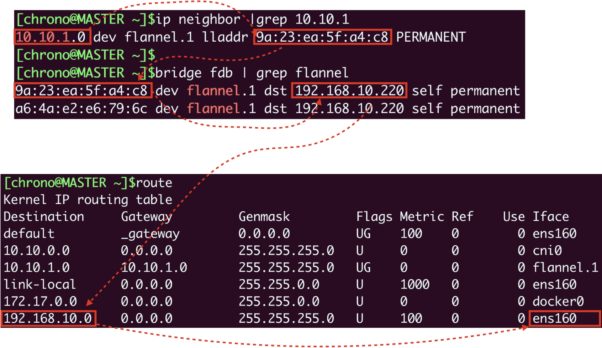
Flannel得到的结果就是要把数据发到“192.168.10.220”，也就是worker节点，所以它就会在原始网络包前面加上这些额外的信息，封装成VXLAN报文，用“ens160”网卡发出去，worker节点收到后再拆包，执行类似的反向处理，就可以把数据交给真正的目标Pod了。
使用Calico网络插件
看到这里，是不是觉得Flannel的Overlay处理流程非常复杂，绕来绕去很容易让人头晕，那下面我们就来看看另一个Route模式的插件Calico。
你可以在Calico的网站（ https://www.tigera.io/project-calico/）上找到它的安装方式，我选择的是“本地自助安装（Self-managed on-premises）”，可以直接下载YAML文件：
wget <https://projectcalico.docs.tigera.io/manifests/calico.yaml>
由于Calico使用的镜像较大，为了加快安装速度，可以考虑在每个节点上预先使用 docker pull 拉取镜像：
docker pull calico/cni:v3.23.1
docker pull calico/node:v3.23.1
docker pull calico/kube-controllers:v3.23.1
Calico的安装非常简单，只需要用 kubectl apply 就可以（记得安装之前最好把Flannel删除）：
kubectl apply -f calico.yaml
安装之后我们来查看一下Calico的运行状态，注意它也是在“kube-system”名字空间：
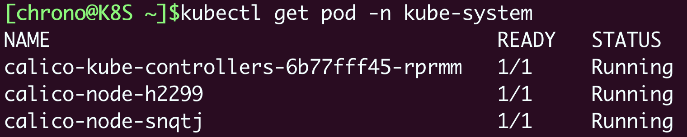
我们仍然创建3个Nginx Pod来做实验：
kubectl create deploy ngx-dep --image=nginx:alpine --replicas=3
我们会看到master节点上有两个Pod，worker节点上有一个Pod，但它们的IP地址与刚才Flannel的明显不一样了，分别是“10.10.219.\*”和“10.10.171.\*”，这说明Calico的IP地址分配策略和Flannel是不同的：
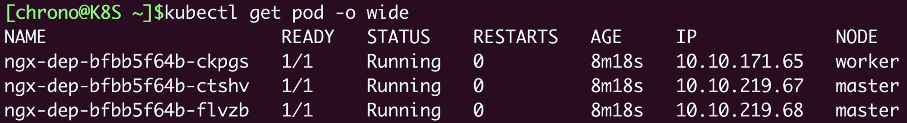
然后我们来看看Pod里的网卡情况，你会发现虽然还是有虚拟网卡，但宿主机上的网卡名字变成了 calica17a7ab6ab@if4，而且并没有连接到“cni0”网桥上：
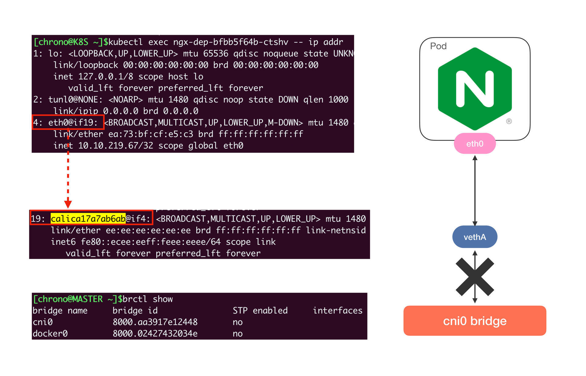
这是不是很奇怪？
其实这是Calico的工作模式导致的正常现象。因为Calico不是Overlay模式，而是Route模式，所以它就没有用Flannel那一套，而是 **在宿主机上创建路由规则，让数据包不经过网桥直接“跳”到目标网卡去**。
来看一下节点上的路由表就能明白：
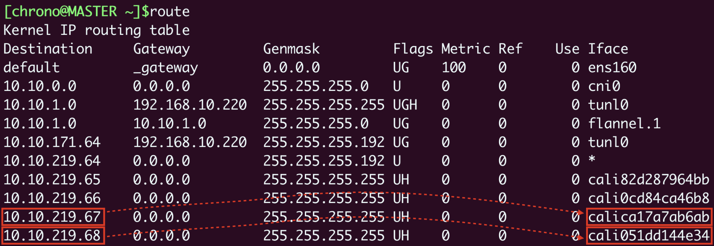
假设Pod A“10.10.219.67”要访问Pod B“10.10.219.68”，那么查路由表，知道要走“cali051dd144e34”这个设备，而它恰好就在Pod B里，所以数据就会直接进Pod B的网卡，省去了网桥的中间步骤。
至于在Calico里跨主机通信是如何路由的，你完全可以对照着路由表，一步步地“跳”到目标Pod去（提示：tunl0设备）。